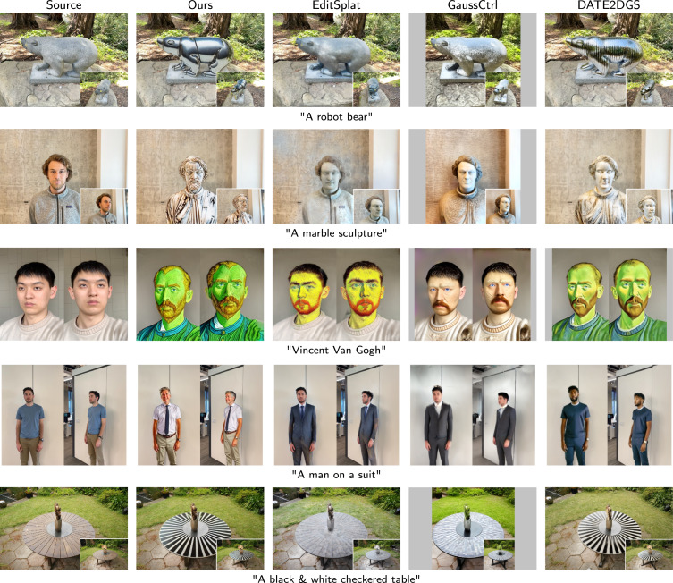

{kind=link}
News
- May, 2026: Paper published in Computers & Graphics.
- Jun 2, 2026: Paper presented at CEIG 2026.
- Jun, 2026: Project page launched.
Abstract
G1NDiff addresses fast text-guided editing of 3D scenes represented with neural rendering and 3D Gaussian Splatting. Instead of repeatedly applying slow multi-step diffusion over many rendered views, the method trains a one-step GAN-diffusion model conditioned on reprojections from the target 3D scene. This makes it possible to transfer edits from 2D datasets to multi-view 3D scene editing while preserving viewpoint consistency across rendered trajectories.
The pipeline combines on-the-fly occlusion-aware reprojection, depth-based conditioning, and a multistage dataset update strategy. The resulting edited views are then used to update the underlying 3D representation, producing edits such as material changes, stylization, local object appearance changes, and portrait transformations with reduced per-view drift.
Resources
Results
Comparison with Prior Methods
{kind=link}

Multi-View Editing Videos
Robot Bear |
Marble Sculpture |
Dragon Eyes |
Van Gogh Style |
Terrazzo Table |
Full-Body Edit |
Bibtex
@article{ojeda2026g1ndiff,
title={G1NDiff: Fast 3D scene editing with reprojection-conditioned GAN-diffusion training on 2D datasets},
author={Ojeda Martin, Ivan and Bustos Sanchez, Jorge and Mazzucchelli, Alessio and Alfonso Arsuaga, Mario and Penate Sanchez, Adrian},
journal={Computers \& Graphics},
pages={104630},
year={2026},
publisher={Elsevier},
doi={10.1016/j.cag.2026.104630}
}